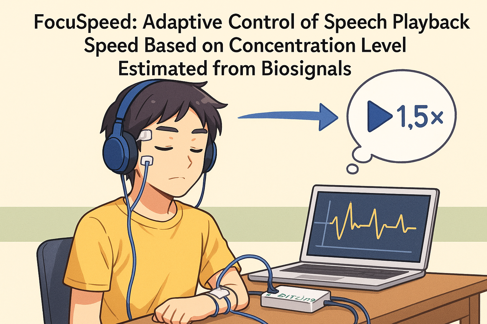

Overview
FocuSpeed is a system that estimates a listener's focus level in real time from EEG signals and automatically adjusts audio playback speed.
It is designed for situations such as learning and information intake, where users naturally shift between wanting to move quickly and wanting to slow down for deeper understanding. The goal is to reduce missed information while maintaining efficient listening.
Purpose
By dynamically changing playback speed based on focus estimated from EEG, this project aims to improve learning efficiency while making it easier to sustain attention during extended listening.
Significance
The project connects internal state, represented by brain activity, with content presentation. It suggests how educational content and audio media could become more responsive to the individual user, with possible applications in education, training, and well-being.
Publications & Awards
- Poster & demo presentation at the Human Interface Symposium 2025 Student Contest (SICHI2025)
- Received the Encouragement Award for "FocuSpeed: Adaptive control of audio playback speed through focus estimation based on biosignals"
My Role
- Designed and implemented the EEG signal-processing pipeline and focus estimation logic.
- Designed the adaptive playback controller and the surrounding UX flow.
- Prepared the demo UI and presentation materials, and presented the work onsite.